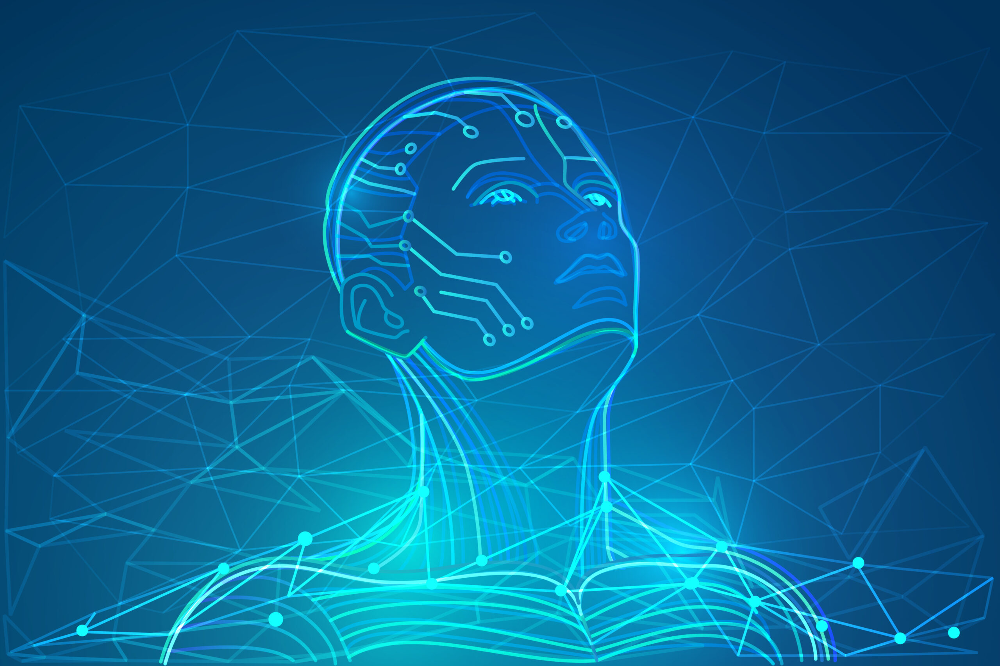

The Risks of artificial body parts and organs
Conceptualisation
The use of artificial body parts allows people to view a person as a machine-like object rather than a human being. The possibility of a body part or organ being replaced, alters the perception of what the normal body status is, as it is confirming body parts are replaceable objects. This can be devaluing for a person with an artificial body part and made them to feel different than everyone else. Walker (2019) conducted a study which argues that the status of a ‘normal’ human being relies on the relationship of a body to a person, and if a prosthesis allows someone to feel human again then everyone should view artificial body parts as ordinary. “In approaching ethical issues surrounding prostheses, it is appropriate to regard them as more like body parts than like objects”, (Walker, 2019). In the future, the technological advances in artificial body parts may increase a more “natural seeming experience” (Svenaeus 2010) which supports the way people with prostheses is looked at. It may also be hard for the people with artificial body parts to accept the fact that they are relying on a piece of technology to function. This may impact their behaviour and be hard for them to identify with.
Health and Safety
Humans functioning with an artificial organ or body part for the rest of their life can be very dangerous and unpredictable. It is a real risk as the implants may malfunction, have dangerous side effects, or are rejected by the immune system. There have been negative experiences towards breast implants and artificial hearts already with the body rejecting the technology. It is hard to risk a person’s life on a few clinical tests with humans or animals. Olsen and Kyree-Friis (2009) stated that artificial organs should be clinically tested over years or even decades with a large number of people. However, this raises ethical issues as we are creating human guinea pigs.
Price
Another problem is the price of even doing the procedure to implement the artificial body part or organ. Since there is a possibility that the body would reject the artificial organ or body part, putting down thousands of dollars to put in the device is sometimes just a huge risk in itself for people who don’t have that financial security or stability.
Security
 Bionic hands are being 3D printed with plastic, metal and composites . The arms can be manufactured to contain a range of smart features. The smart features can include inbuilt display, an NFC chip which allows for contactless payments, functions like a smart watch and a GSM module. All these features require access to the cloud, and since it needs to access the cloud this makes the bionic arms susceptible to security issues more precisely people hacking into the arm. This has paved the way for potential attacks against prosthetic users.
Bionic hands are being 3D printed with plastic, metal and composites . The arms can be manufactured to contain a range of smart features. The smart features can include inbuilt display, an NFC chip which allows for contactless payments, functions like a smart watch and a GSM module. All these features require access to the cloud, and since it needs to access the cloud this makes the bionic arms susceptible to security issues more precisely people hacking into the arm. This has paved the way for potential attacks against prosthetic users.
Distributive Justice
 “The development of increasingly sophisticated prostheses and implants raises issues of distributive justice” (Brey, 2005). Will there be a cheap and expensive implant? High quality and low quality one? If someone can’t afford the artificial body part or organ, can they not get what they need? Or does everyone have a moral right for one? If only certain people are lucky enough to get the artificial organ or body part this will create a number of ethical problems for people. There are already a number of practical ethical issues such as damage to an artificial limb isn’t treated the same and as fair as to bodily damage. If someone else was to break an artificial body part, it is up to the owner to pay for it. Also, when someone with a prosthetic is incarcerated, it is usually taken off them as it is seen as a weapon. This limits the movement and leaves them at a disadvantage in prison.
“The development of increasingly sophisticated prostheses and implants raises issues of distributive justice” (Brey, 2005). Will there be a cheap and expensive implant? High quality and low quality one? If someone can’t afford the artificial body part or organ, can they not get what they need? Or does everyone have a moral right for one? If only certain people are lucky enough to get the artificial organ or body part this will create a number of ethical problems for people. There are already a number of practical ethical issues such as damage to an artificial limb isn’t treated the same and as fair as to bodily damage. If someone else was to break an artificial body part, it is up to the owner to pay for it. Also, when someone with a prosthetic is incarcerated, it is usually taken off them as it is seen as a weapon. This limits the movement and leaves them at a disadvantage in prison.
Human Augmentation
 Human augmentation is the physical or mental enhancement of the human body to perform better. This raises questions which could impact human life in the future. What if technology reaches a point when artificial body parts or limbs perform a lot better than how our body naturally is? This would make everyone want to be artificial and will create bionic people. How far could this go? “If certain augmentations get very popular, there is also a risk that they will become accepted as the norm, and people without one will be seen as cripples” (Brey 2005).